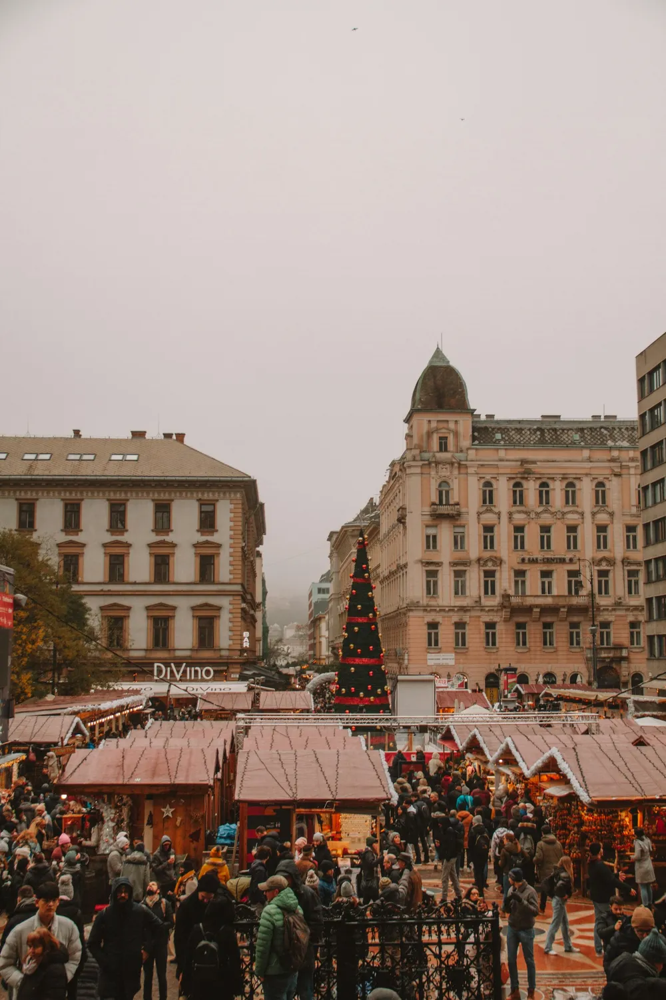

01
Famous Christmas Markets in Budapest
Budapest’s Christmas markets are among the most celebrated in Europe, offering festive atmosphere, artisan crafts, and Hungarian specialties. They usually open in the middle of November and close by the end of the year, usually the 31 of December. The Christmas market on Vörösmarty Square marks the entrance to Váci Utca, creating a festive gateway to Budapest’s famous pedestrian street.